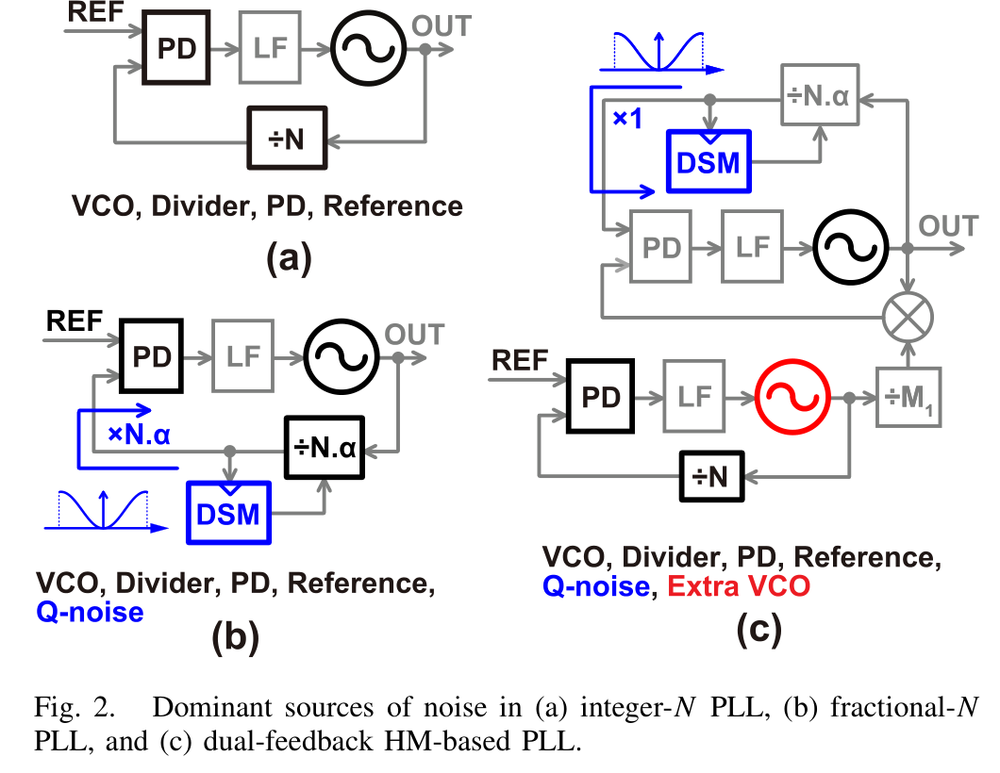
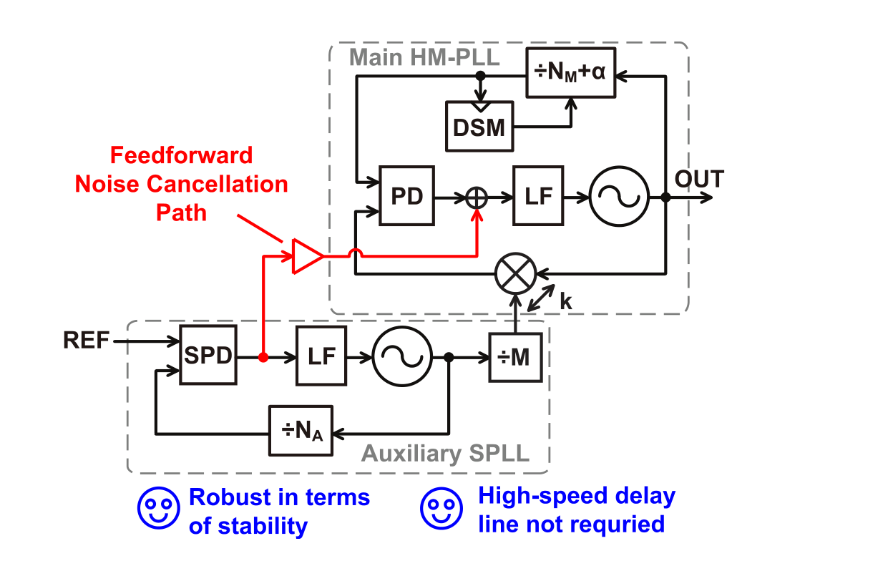
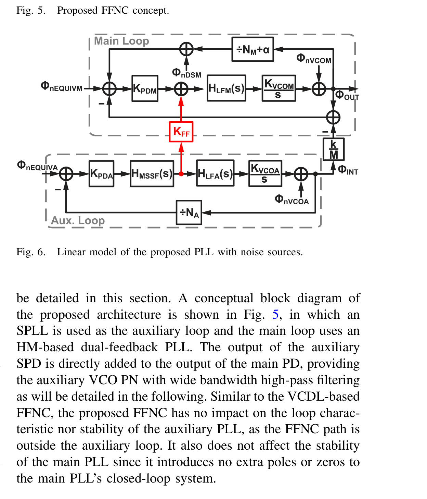
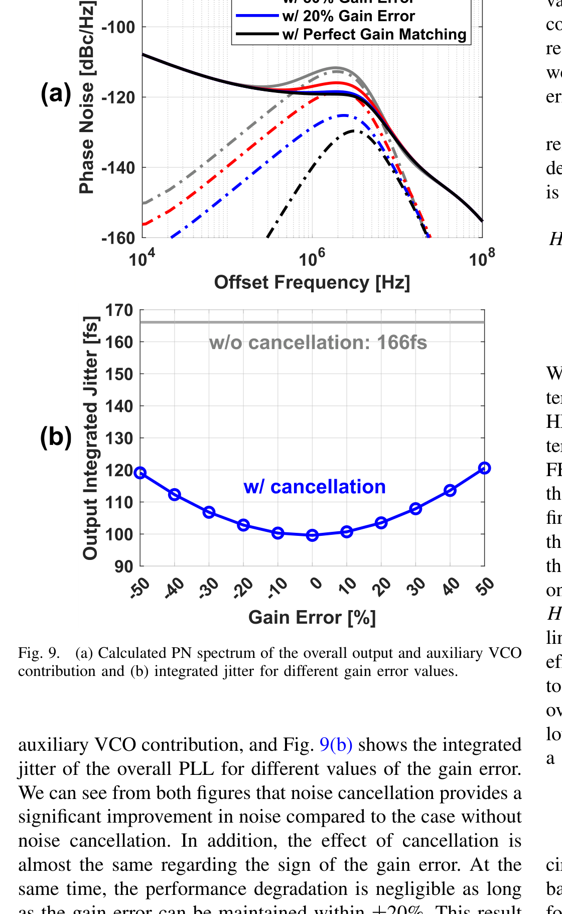
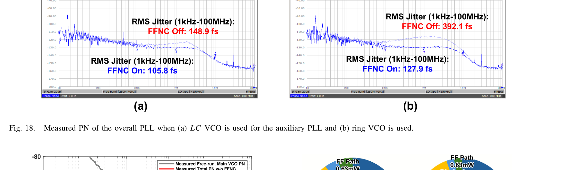
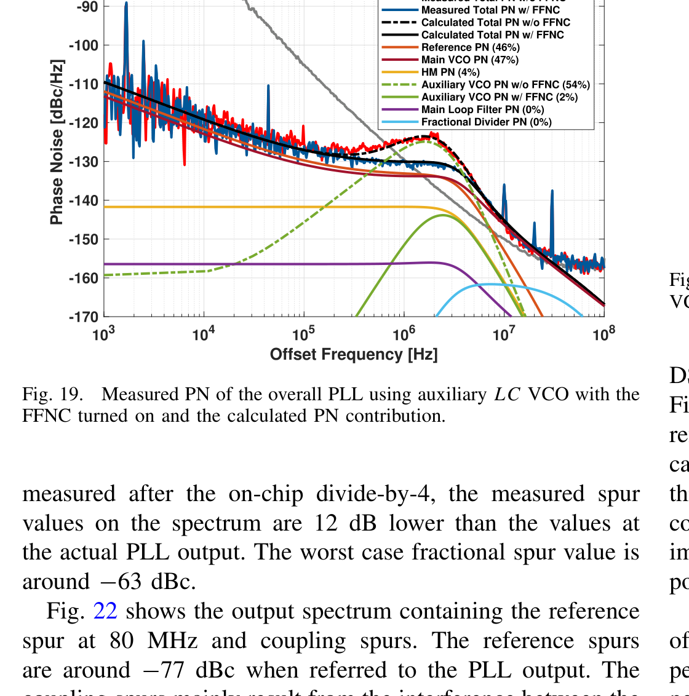
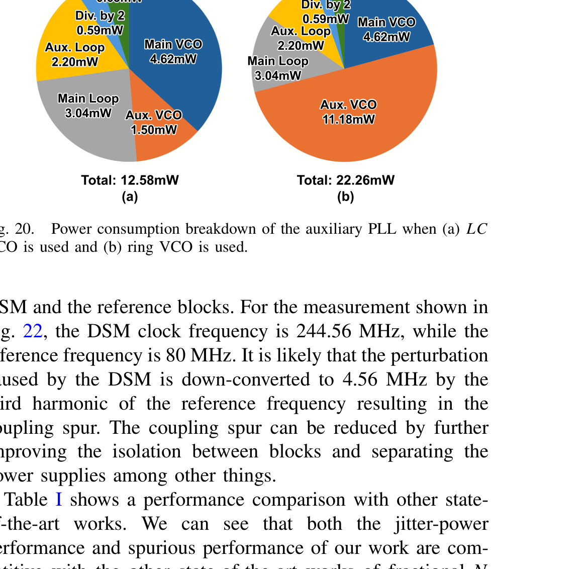

A Harmonic-Mixer-Based Fractional-N PLL Employing Voltage-Domain Feed-Forward Noise Cancellation 読書ノート
Haoming Zhang, Masaru Osada, Yuyang Zhu, Tetsuya Iizuka, IEEE Journal of Solid-State Circuits, vol. 60, no. 8, pp. 2820–2831, Aug. 2025.
著者に長田将さん・飯塚教授本人が入っている飯塚研の実チップ論文。DTC/HM最適化比較論文ノートと同じグループの一連の研究。図は本文PDF（参考論文/）から切り出したもの。個人の学習用。
0. この論文を超ざっくり
HMベースDual-Feedback PLL（長田博論ノート第3章の主提案）の最大の弱点は、補助（外部）PLLのために余分なVCOが必要で、そのノイズ・電力がオーバーヘッドになること。この論文は、その補助VCOのノイズを電圧領域のフィードフォワード雑音キャンセル（FFNC）で消す技術を提案し、65nm CMOSで実チップ化した。
結果：補助VCOのジッタ寄与を54%→2%まで圧縮し、電力オーバーヘッドはわずか0.63 mW。全体で106 fs rmsジッタ・-63 dBc最悪スパーを達成。
これだけ覚えて次へ
Dual-Feedback構成の「もう1個PLLがいる」という代償を、高速な回路を追加せずに、既存のSPD出力を主PD出力に足すだけ（信号を"引き算"ならぬ"足し算"でキャンセル）で軽くした、という話。
1. 背景：補助VCOのノイズ・電力オーバーヘッド問題

補助VCOのノイズは、補助PLL自身でハイパスフィルタされ、さらに主PLLでローパスフィルタされる（2段構えで削れる）。しかし主PLLのフィルタ効果を十分に得るには補助PLLの帯域幅を主PLLよりずっと広く取る必要があり、これは安定性（位相マージン、基準周波数の半分以下という制約）とトレードオフになる。特に基準周波数が低い（実用上有利なXTAL発振器を使う）ほど、この制約は厳しくなる。
既存の対策とその欠点：VCDLベースFFNC
先行研究（Nagam & Kinget, 2018）は、補助PLL出力にVCDL（電圧制御遅延線）を置き、SPD出力でVCDLを制御してノイズをキャンセルする方式。安定性への悪影響はないが、VCDLがGHz級の高速動作＋広い遅延レンジを要求されるため、ノイズ・電力オーバーヘッドが大きく、プロセスばらつきでゲイン調整も難しい。
2. 提案：電圧領域FFNC
VCDLのような高速回路を使わず、補助PLLのSPD（サンプリング位相検出器）出力を、抵抗ベースの帰還アンプでゲイン調整してから、主PLLのPD出力に直接加算する方式。


キャンセルの条件は、主信号経路のゲイン $k/M \cdot K_\text{PDM}$ と、キャンセル経路のゲイン $K_\text{FF}K_\text{PDA}/N_A$ を一致させること(式10)。完全に一致すれば理想的には補助VCOノイズを消せるが、実際にはSPDのサンプリング特性 $H_\text{SF}(s)$ が乗るため、$f_\text{REF}/2$ を超える成分は検出できない。それでも従来より遥かに広い帯域($f_\text{REF}/2$近く)でハイパスフィルタ効果が得られる(式11、Fig.8)。
ゲイン誤差の主要因を1つに絞り込む発想
主・キャンセル経路のゲイン比を分解すると、変わりうるのは実質SPDのゲイン $K_\text{PDA}$ だけ(分周比は離散値でばらつかない、PDのゲインは電源電圧管理下で無視できる、フィードフォワード段のゲインは抵抗比なので安定)。だから回路設計の力点をSPDのPVT耐性一点に絞れる、という設計の切り分け方が実務的。
3. ゲイン誤差への頑健性

ゲイン誤差が±20%程度に収まっていれば性能劣化はほぼ無視できる、という結果。実際のSPD実装では、単純な電流源バイアスだと±34.2%ばらつくところ、スイッチトキャパシタ(SC)ベースのバイアス生成で±18.7%(改良版では±5.4%)まで抑え込み、キャリブレーション無しで許容範囲に収めている。これがこの論文のもう一つの核心(「補助VCOノイズを消す」だけでなく「消すための回路自体のPVT耐性を無キャリブレーションで確保する」という2段構えの設計)。
4. 測定結果
65nm CMOS、0.36 mm²、基準周波数80 MHz。補助PLLにLC-VCOを使う場合と、あえて悪いVCO(効果の実証用)としてリングVCOを使う場合の両方で測定。



性能表(Table I)では、キャリブレーション不要なQ-noise抑制方式の中で最小のジッタを達成。DTCベースの一部の研究はさらに良いジッタを出しているが、それらは基準周波数250 MHzという実用上不利な条件(市販XTALで作りにくい)を使っており、80 MHz基準のこの論文はFoMREFで上回る。
5. マスターの卒論との関係
この論文は長田博論ノート第3章のDual-Feedback構成そのものの実チップ改良版で、著者にOsada・飯塚教授が入っている直系の関連研究。DTC/HM最適化比較論文とも同じ研究ライン上にある。
- Dual-Feedback構成最大の弱点への具体的な回答——「補助PLLがいる」という代償を、追加の高速回路無しに軽減する実例。卒論でDual-Feedback構成の課題と対策を論じる際、DTCベースとの比較だけでなく「Dual-Feedback自身の弱点をどう潰すか」という軸の先行技術として使える。
- 雑音伝達関数(NTF)の立て方の実例——式(1)〜(12)は、主PLL・補助PLLそれぞれの雑音源から出力までの伝達関数を、線形モデル(Fig.6)から系統的に導出する手順そのもの。卒論のシミュレーション・解析パートを書く際のテンプレートとして直接参考にできる。
- 「キャリブレーション不要」という設計思想の徹底——FFNCのゲイン誤差要因をSPD一点に絞り込み、それをSC-biasedな回路技術で無キャリブレーションのままPVT耐性を確保する、という流れ全体が、長田研の一貫した設計哲学(HMベース＝キャリブレーションレスが売り)の実践例になっている。
- ジッタ・電力オーバーヘッドの定量的な比較軸——「同じ効果を電力増加だけで達成しようとすると50倍の電力が要る」という比較(Sec.V)は、ノイズキャンセル技術の価値を定量的に示す論法として、卒論の考察でも使える型。
6. 深掘り価値がある箇所 / 飛ばしていい箇所
深掘りする価値あり
- Sec. III(式1〜12、Fig.5〜10)：NTFの導出とFFNCのフィルタ特性。数式ベースの解析の書き方として厚めに読む価値がある。
- Sec. IVのSC-biasedなSPDスロープジェネレータ(Fig.12〜14)：キャリブレーション無しでPVT耐性を出す回路の考え方。回路設計まで踏み込むなら必読。
- Table I：他のQ-noise抑制方式(DTCベース含む)との定量比較。ポジショニングの書き方の参考になる。
飛ばしてよい
- Fig.11〜16の回路実装細部(トランジスタサイジングの調整履歴など)。回路を自分で設計しない限り不要。
- Fig.21・22のスパー測定の細部(結論は「フラクショナルスパー-63dBc、基準スパー-77dBc」で足りる)。
- 参考文献リスト・著者紹介。
7. 用語・前提の補足
| 用語 | 意味 |
|---|---|
| FFNC (Feed-Forward Noise Cancellation) | フィードフォワード雑音キャンセル。ループ内でなく、外から直接ノイズ成分を足し込んで打ち消す方式。ループの安定性に影響しないのが利点。 |
| VCDL (Voltage-Controlled Delay Line) | 電圧制御遅延線。先行研究のFFNCで使われた高速回路。GHz級動作が必要でオーバーヘッドが大きい。 |
| SPD (Sampling Phase Detector) | サンプリング型位相検出器。DTC/HM最適化論文ノートにも既出。 |
| SC-biased (Switched-Capacitor-based biasing) | スイッチトキャパシタ方式のバイアス生成。電流源が容量比に比例するよう設計し、プロセスばらつきの影響を減らす回路テクニック。 |
| NTF (Noise Transfer Function) | 雑音伝達関数。ある雑音源から出力までの伝達特性。ハイパス/ローパスの形で表れる。 |
| FoMREF | 基準周波数の違いを補正したFoM。低い基準周波数(実用上有利)を使う設計を、高い基準周波数を使う設計と公平に比較するための指標。 |